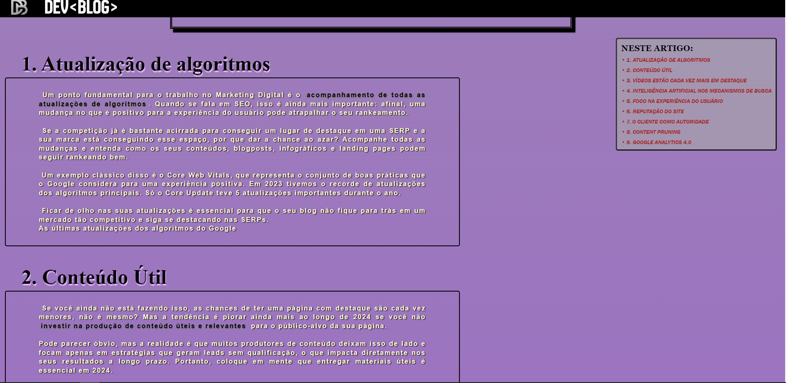
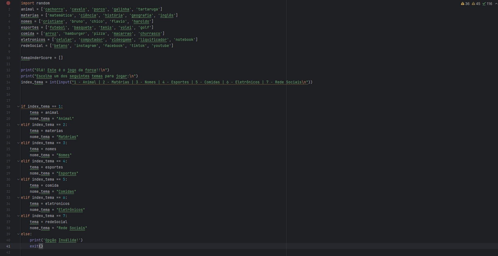
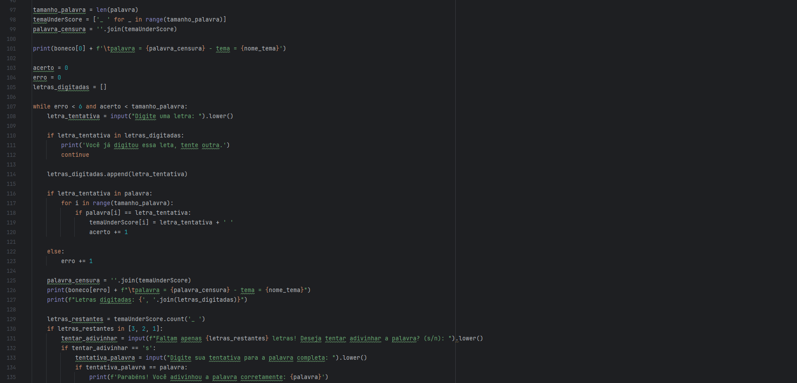
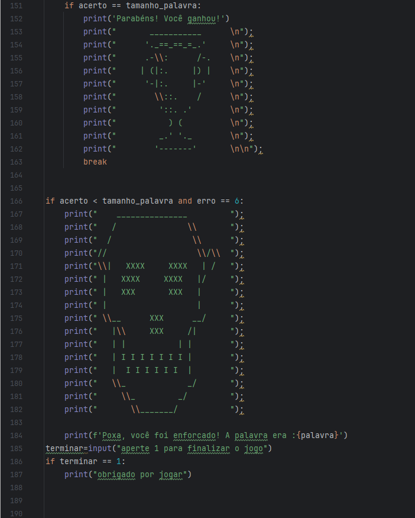

Abaixo estão alguns projetos que desenvolvi:



Jogo da forca criado na linguagem Python com sistema de escolha de temas pré definidos.
O código foi escrito com a possibilidade do usuário poder acertar a palavra quando faltam 3 ou menos letras
Além disso, também foi incluído um sistema de apresentação de uma imagem através de arte ASCII quando o usuário ganha ou perde..